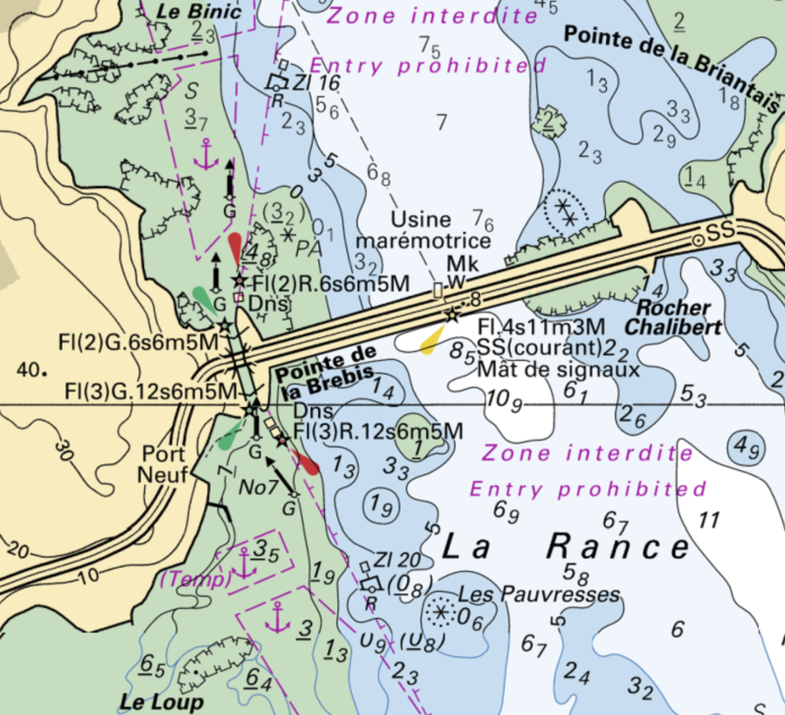
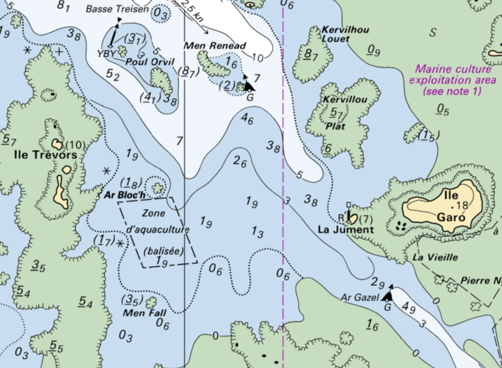
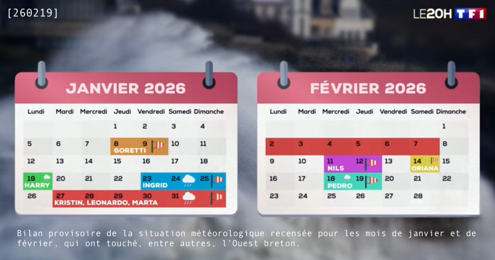

250727
250728
250729
250810

250923
Plouër-sur-Rance – Minihic
Départ chantier naval Samson et mise à l'eau vers 11h. Arrivée mouillage de Minihic, trajet au moteur, ancre sur vase et algues. Première nuit ok.
[250925] Au deuxième jour je m’aperçois que je dérive. Je reste en alerte l’après-midi. Le soir le courant de marée me fait dériver sérieusement. Je lève l’ancre qui était effectivement saturée d’algues et n’accrochait en fait plus du tout. Je me suis donc amarré plus loin à une bouée visiteur, et ce en pleine nuit.
Départ chantier naval Samson et mise à l'eau vers 11h. Arrivée mouillage de Minihic, trajet au moteur, ancre sur vase et algues. Première nuit ok.
[250925] Au deuxième jour je m’aperçois que je dérive. Je reste en alerte l’après-midi. Le soir le courant de marée me fait dériver sérieusement. Je lève l’ancre qui était effectivement saturée d’algues et n’accrochait en fait plus du tout. Je me suis donc amarré plus loin à une bouée visiteur, et ce en pleine nuit.
251002
251004
251007
251013
Minihic – écluse du barrage de la Rance – Saint-Cast-le-Guildo
Départ mouillage de Minihic. Arrivée bouée d’attente écluse. Trajet au moteur.
[251015] Passage de l'écluse du barrage de la Rance, du mouillage d’attente sud au mouillage d’attente nord. Trajet à la nuit au moteur vers 7h du matin, arrivée à l'aube.
[251017] Départ vers 9h, au moteur en empruntant le chenal de la grande porte jusqu'au 48.6697°N et 2.1142°O. Puis essaie des voiles. La grand voile n'a pas pu être hisser car je n'ai pas pu gérer tous les paramètres, à savoir le vent, les coulisseaux et/ou la drisse qui se bloquai(en)t, la bôme surelevée sur le premier ris ... Bref, j'ai navigué au génois tout le long avec un cap de 252˚ jusqu'à 1 ou 2 miles du port de Saint-Cast-le-Guildo. J'avais envisagé de rester sur une des bouées à côté du port, mais la houle m'en a vite dissuadé. Pourtant j'avais bien galéré à m'y amarrer. Arrivée au port dans l'après-midi.
Départ mouillage de Minihic. Arrivée bouée d’attente écluse. Trajet au moteur.
[251015] Passage de l'écluse du barrage de la Rance, du mouillage d’attente sud au mouillage d’attente nord. Trajet à la nuit au moteur vers 7h du matin, arrivée à l'aube.
[251017] Départ vers 9h, au moteur en empruntant le chenal de la grande porte jusqu'au 48.6697°N et 2.1142°O. Puis essaie des voiles. La grand voile n'a pas pu être hisser car je n'ai pas pu gérer tous les paramètres, à savoir le vent, les coulisseaux et/ou la drisse qui se bloquai(en)t, la bôme surelevée sur le premier ris ... Bref, j'ai navigué au génois tout le long avec un cap de 252˚ jusqu'à 1 ou 2 miles du port de Saint-Cast-le-Guildo. J'avais envisagé de rester sur une des bouées à côté du port, mais la houle m'en a vite dissuadé. Pourtant j'avais bien galéré à m'y amarrer. Arrivée au port dans l'après-midi.



251019
Saint-Cast-le-Guild – Paimpol
Départ vers 11h. Mer difficile, et à contre-courant (coefficient de marée de 79) avec une houle plutôt courte d'environ 2m tout l'après-midi pour une arrivée à l'écluse de Paimpol à l'étale de marée haute. Passage de la pointe de Saint-Cast, de la Latte et du Cap Fréhel à plus d'un mile jusqu'au 48.7039°N et 2.2965°O au moteur. Cap plein Ouest pour passer au sud du phare du Grand Léjon, puis cap 284˚ au passage du phare jusqu'au chenal de la Jument au tourmentin. Entrée Anse de Paimpol au moteur jusqu'au port.
Départ vers 11h. Mer difficile, et à contre-courant (coefficient de marée de 79) avec une houle plutôt courte d'environ 2m tout l'après-midi pour une arrivée à l'écluse de Paimpol à l'étale de marée haute. Passage de la pointe de Saint-Cast, de la Latte et du Cap Fréhel à plus d'un mile jusqu'au 48.7039°N et 2.2965°O au moteur. Cap plein Ouest pour passer au sud du phare du Grand Léjon, puis cap 284˚ au passage du phare jusqu'au chenal de la Jument au tourmentin. Entrée Anse de Paimpol au moteur jusqu'au port.
251021

251113
Paimpol – port Blanc
Belle journée au portant avec un vent de 10 à 15 nœuds, toutes voiles dehors (avec la grand voile bloquée sur le premier ris), avec configuration en ciseaux plutôt réussie sur la durée. Petite moyenne autour de 5 nœuds. 5/6 heures de navigation en contournant l'île de Bréhat, et avec le courant dans l'après-midi. Je garde toujours une distance d'au moins 1 mile des zones à risque, autant que possible.
Belle journée au portant avec un vent de 10 à 15 nœuds, toutes voiles dehors (avec la grand voile bloquée sur le premier ris), avec configuration en ciseaux plutôt réussie sur la durée. Petite moyenne autour de 5 nœuds. 5/6 heures de navigation en contournant l'île de Bréhat, et avec le courant dans l'après-midi. Je garde toujours une distance d'au moins 1 mile des zones à risque, autant que possible.


251117
port Blanc – Perros-Guirec
Une mauvaise météo en prévision sur la semaine me décide à rejoindre le port de Perros-Guirec ce jour même. Environ une heure et demie de navigation à contre-courant (coefficient 69) pour une arrivée au port vers 16h au génois, à l'ouverture du bassin qui se fait à marée haute. Passage délicat à la sortie du mouillage de Port Blanc au niveau des rochers autour de l'île du Château Neuf avec un courant qui avait tendance à m'y pousser.
Une mauvaise météo en prévision sur la semaine me décide à rejoindre le port de Perros-Guirec ce jour même. Environ une heure et demie de navigation à contre-courant (coefficient 69) pour une arrivée au port vers 16h au génois, à l'ouverture du bassin qui se fait à marée haute. Passage délicat à la sortie du mouillage de Port Blanc au niveau des rochers autour de l'île du Château Neuf avec un courant qui avait tendance à m'y pousser.

251117

251119
[251121] remplacement de la bouteille de gaz cuisine.
251122
251125
251126
Perros-Guirec – Roscoff
Navigation au près cap 260˚ avec un vent de sud-ouest de 10 nœuds. Au moment de virer de bord au 48.8363°N et 3.7639°O, je perds le contrôle du bateau, car je n'ai pas su gérer la barre, la grand voile, le génois, le vent et la houle pour la manœuvre. J'ai donc affalé la grand voile, et au moment d'enrouler le génois, celui-ci se bloque. Il a fallu tant bien que mal finir de l'enrouler à la main, pour finir la navigation au moteur directement cap sur Roscoff. J'avais le courant avec moi, arrivée au port à l'étale de marée basse. Je suis passé devant l'île Tomé par 48.8357°N et 3.4339°O en partant de Perros-Guirec, puis devant les Sept-Îles avant de hisser les voiles.
Navigation au près cap 260˚ avec un vent de sud-ouest de 10 nœuds. Au moment de virer de bord au 48.8363°N et 3.7639°O, je perds le contrôle du bateau, car je n'ai pas su gérer la barre, la grand voile, le génois, le vent et la houle pour la manœuvre. J'ai donc affalé la grand voile, et au moment d'enrouler le génois, celui-ci se bloque. Il a fallu tant bien que mal finir de l'enrouler à la main, pour finir la navigation au moteur directement cap sur Roscoff. J'avais le courant avec moi, arrivée au port à l'étale de marée basse. Je suis passé devant l'île Tomé par 48.8357°N et 3.4339°O en partant de Perros-Guirec, puis devant les Sept-Îles avant de hisser les voiles.
251126
251203
251206
251211
251217
251231
Roscoff – l'Aber Wrac'h
Navigation au portant avec une petite brise. Sur un conseil, qui en vaut probablement un autre, j'ai passé une annonce sur le site bourse aux équipiers pour convoyer le bateau jusqu'à Guidel. Je pense qu'un coup de main pourrait m'être profitable à tout point de vue. Louise et Nicolas ont répondu et m'ont donc rejoint. Nicolas a pu régler la bôme de grand voile et profiter ainsi de toute sa surface. Tentative de hisser le spi, en vain, car pas de balancine (ni hale-bas) de tangon, de plus aucun des tangons (il y en a deux à bord) n'est opérationnel (bloqué au niveau des machoires). Nous avons contourné l'île de Batz puis cap plein ouest jusqu'à l'Aber Wrac'h. Arrivée au port par le grand chenal via le Libenter.
Navigation au portant avec une petite brise. Sur un conseil, qui en vaut probablement un autre, j'ai passé une annonce sur le site bourse aux équipiers pour convoyer le bateau jusqu'à Guidel. Je pense qu'un coup de main pourrait m'être profitable à tout point de vue. Louise et Nicolas ont répondu et m'ont donc rejoint. Nicolas a pu régler la bôme de grand voile et profiter ainsi de toute sa surface. Tentative de hisser le spi, en vain, car pas de balancine (ni hale-bas) de tangon, de plus aucun des tangons (il y en a deux à bord) n'est opérationnel (bloqué au niveau des machoires). Nous avons contourné l'île de Batz puis cap plein ouest jusqu'à l'Aber Wrac'h. Arrivée au port par le grand chenal via le Libenter.

260101
l'Aber Wrac'h – l'Aber Benoit
Petite navigation d'environ 2 heures au près et dernière avec Louise et Nicolas (pour cause de météo trop difficile pour aller plus loin) jusqu'à l'Aber Benoit. Après avoir contourné le Libenter jusqu'au 48.6218°N et 4.6331°O, nous avons navigué plein ouest vent debout (10 à 15 nœuds) et à contre-courant (un peu plus d'un nœud, estimé à 3 nœuds par Nicolas au plus fort). Nicolas à la barre a pu pousser le loch jusqu'à plus de 10 nœuds. Entrée dans l'aber depuis 48.6237°N et 4.6712°O jusqu'au mouillage sur bouées.
Petite navigation d'environ 2 heures au près et dernière avec Louise et Nicolas (pour cause de météo trop difficile pour aller plus loin) jusqu'à l'Aber Benoit. Après avoir contourné le Libenter jusqu'au 48.6218°N et 4.6331°O, nous avons navigué plein ouest vent debout (10 à 15 nœuds) et à contre-courant (un peu plus d'un nœud, estimé à 3 nœuds par Nicolas au plus fort). Nicolas à la barre a pu pousser le loch jusqu'à plus de 10 nœuds. Entrée dans l'aber depuis 48.6237°N et 4.6712°O jusqu'au mouillage sur bouées.

260108

260120

260118
l'Aber Benoit – l'Aber Ildut
À la sortie de l'Aber Benoît, j'ai voulu passer du côté de l'île Trevors, mais le passage au milieu d'écueils m'est apparu trop ténu et j'ai opté pour reprendre le chenal par lequel nous étions arrivés (à l'est de Men Renead). J'ai navigué avec le courant de jusant pour arriver à l'étale de marée basse au niveau du phare du Four et avant la renverse au niveau de l'Aber Ildut.
À la sortie de l'Aber Benoît, j'ai voulu passer du côté de l'île Trevors, mais le passage au milieu d'écueils m'est apparu trop ténu et j'ai opté pour reprendre le chenal par lequel nous étions arrivés (à l'est de Men Renead). J'ai navigué avec le courant de jusant pour arriver à l'étale de marée basse au niveau du phare du Four et avant la renverse au niveau de l'Aber Ildut.


260128
[260206] remplacement de l'anode du moteur Tohatsu.
260212
